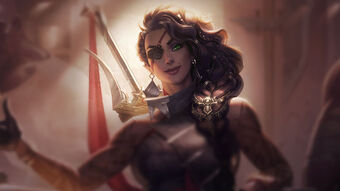
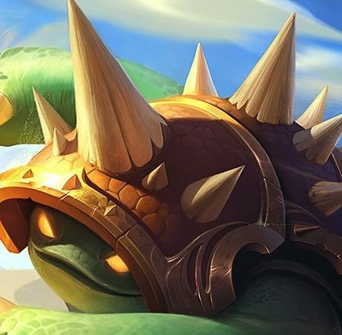

El League of Legends cuenta con un total de 140 campeones, y cada uno cuenta con sus propias habilidades y hechizos, su propio rol y si atacan cuerpo a cuerpo o a distancia. A continuación pasaré a explicar unos 10 de ellos:
Cho'Gath convierte rápidamente la materia en más crecimiento para su cuerpo, aumentando su masa y densidad muscular o endureciendo su caparazón como diamante orgánico. Cuando crecer más no cumple con las necesidades del engendro del Vacío, este vomita el material excedente en forma de espinas filosas como navajas, dejando a la presa como brocheta, lista para comerse más tarde.
Shauna Vayne es una cazadora de monstruos demaciana letal y despiadada que ha dedicado su vida a buscar y destruir al demonio que asesinó a su familia. Provista de una ballesta que lleva en la muñeca y un corazón ansioso de venganza, Vayne solo es verdaderamente feliz cuando mata a practicantes de las artes oscuras o a sus creaciones, golpeando desde las sombras con una ráfaga de proyectiles de plata.
Sin inmutarse siquiera por los obstáculos más peligrosos y amenazantes, Teemo explora el mundo con un entusiasmo infinito y una alegría desbordante. Con un inquebrantable sentido de la moralidad, este yordle se enorgullece de seguir el Código de los Exploradores de Bandle, a veces con tal afán que no es consciente de las consecuencias de sus acciones. Aunque algunos dicen que la existencia de los Exploradores es cuestionable, una cosa es cierta: la convicción de Teemo no es para tomarla a broma.
Sett es una prominente figura en los emergentes círculos criminales jonios, que aseguró su posición al inicio de la guerra con Noxus. A pesar de sus humildes comienzos como luchador en el foso de Navori, no tardó en labrarse una reputación con la ayuda de su desmesurada fuerza y su capacidad para aguantar palizas terribles. Tras abrirse paso entre los contendientes locales, Sett reina ahora por la fuerza en el foso en el que antes luchaba.
Blitzcrank es un autómata enorme, casi indestructible, creado originalmente para el tratamiento de residuos tóxicos. Sin embargo, este propósito original le parecía demasiado restrictivo, así que se automodificó para servir mejor a los débiles del sumidero. Blitzcrank no duda en emplear su fuerza y su resistencia para proteger a los demás, con su práctico puño de metal o con un estallido de energía para someter a cualquiera que cause problemas.
Con un juicio decisivo y letal en el combate, Katarina es una de las mejores asesinas noxianas. Al ser la primogénita del legendario general Du Couteau, ha dado a conocer sus habilidades con asesinatos rápidos contra enemigos inconscientes. Una ambición exaltada la ha conducido a perseguir objetivos fuertemente protegidos, incluso poniendo en peligro a sus aliados. No importa la misión; Katarina no dudará en llevar a cabo su tarea en medio de un torbellino de dagas dentadas.
 Samira mira a la muerte a los ojos con una confianza férrea, y va siempre en busca de emociones. Tras la destrucción de su hogar en Shurima cuando era una niña, Samira encontró su verdadera vocación en Noxus, donde se ganó la reputación de ser una temeraria con estilo capaz de llevar a cabo las misiones más peligrosas. Con sus pistolas de pólvora negra y su espada de diseño personalizado, destaca en situaciones de vida o muerte, eliminando a cualquiera que se interponga en su camino con rapidez y clase.
 Idealizado por muchos, ignorado por otros, inexplicable para todos, Rammus, el extraño ser, es todo un enigma. Protegido por un armazón de pinchos, inspira teorías cada vez más absurdas sobre sus orígenes allá donde va. Estas pasan por considerarlo un semidiós, un oráculo sagrado y hasta una simple bestia producto de la magia. Sea cual sea la verdad, Rammus se guarda su opinión y no se detiene ante nadie en sus viajes por el desierto de Shurima.
Ornn es el espíritu de Freljord de la forja y la artesanía. Trabaja en la soledad de una enorme forja esculpida en las cavernas de lava bajo el volcán de Dulcehogar. En ella modela objetos de calidad sin igual y depura menas en burbujeantes calderos de roca fundida. Cuando otras deidades (sobre todo Volibear) merodean por la tierra y se entrometen en asuntos de mortales, Ornn se ofrece para poner a estos seres impetuosos en su sitio, ya sea con su fiel martillo o con la furia de las mismísimas montañas.
Maldita desde que era apenas una niña y perseguida por la Niebla Negra, Senna se unió a una orden sagrada conocida como los Centinelas de la Luz y pasó años luchando sin descanso hasta que fue asesinada y encerrada en el interior de la linterna del cruel espectro conocido como Thresh. Se negó a perder la esperanza y, en el interior de su prisión, aprendió a servirse de la Niebla para regresar al mundo de los vivos, cambiada para siempre. Ahora, armada con luz y oscuridad, Senna busca la forma de poner fin a la Niebla Negra y hacer que se vuelva contra sí misma. Con cada disparo de su arma reliquia, le otorga el descanso eterno a las almas que agonizan en su interior.
 Shauna Vayne es una cazadora de monstruos demaciana letal y despiadada que ha dedicado su vida a buscar y destruir al demonio que asesinó a su familia. Provista de una ballesta que lleva en la muñeca y un corazón ansioso de venganza, Vayne solo es verdaderamente feliz cuando mata a practicantes de las artes oscuras o a sus creaciones, golpeando desde las sombras con una ráfaga de proyectiles de plata.
Shauna Vayne es una cazadora de monstruos demaciana letal y despiadada que ha dedicado su vida a buscar y destruir al demonio que asesinó a su familia. Provista de una ballesta que lleva en la muñeca y un corazón ansioso de venganza, Vayne solo es verdaderamente feliz cuando mata a practicantes de las artes oscuras o a sus creaciones, golpeando desde las sombras con una ráfaga de proyectiles de plata.